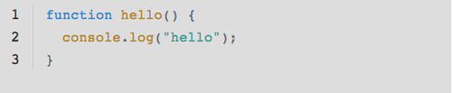
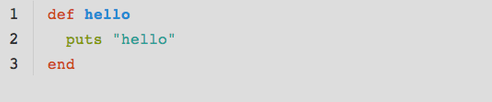
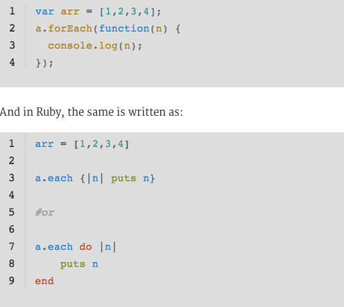

After working with Ruby for a short time and being introduced to JavaScript this past week, it's interesting to see the similarities between the two languages. It's funny to me that the smallest difference in syntax, including or not including a ";", can be the hardest part to get used to.
In JavaScript and Ruby creating functions and methods respectively are very similar, but do have slightly different syntax:
Here's the JavaScript function:

And here's the Ruby method:
*Both images taken from here*
As you can see in the images above, JavaScript looks to have a much more strict syntax with the inclusion of the curly braces "{}" and the semi-colons ";". I like the fact that Ruby is more forgiving in this syntax and it is assumed for you when writing your code.
The next comparison of the semi-colon can be seen here when comparing syntax for iterations through arrays:

And again, images taken from hereSo to reiterate, I feel like Ruby is a much more forgiving language syntactically. I know that something as simple as including a ";" seems silly to forget, but it can definitely cause your programs not to function properly.
All content contributed or approved by Peter Fitzpatrick
Copyright © Peter Fitzpatrick 2014